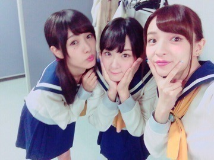
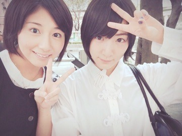

| 2015/09 11 Fri | 秋の匂いヽ(・∀・)ノ |
生駒でーすヽ(・∀・)ノ
9月の頭におやすみがありました！
生駒は東京で出来た友達と遊ぶ事にしましたヽ(・∀・)ノ
秋田に帰るのも考えましたが、この機会にと思い、留まりました笑
東京の友達全員には会えなかったけど、
初めてごはんに行って
チームジャンポリガールズと行った焼肉は、ヲタ話したりと超ヲタ充したしヽ(・∀・)ノ
チームコープスパーティーガールズと行った時はお互いアイドルしているからあーでもないこーでもないとかいっぱい悩みとかも喋った


舞台挨拶も一緒に出たよ〜ヽ(・∀・)ノ
れなりんとも久しぶりに会ってめちゃ話したな〜ヽ(・∀・)ノ
将来の事とかも深く話したヽ(・∀・)ノ
何軒カフェ入った⁈
ってくらい歩いて座ってを繰り返した笑

れなりんの夢を改めて応援していこうと思ったヽ(・∀・)ノ
お互い頑張ろう〜ヽ(・∀・)ノ！！⭐️
そう！！
自分の中では13枚目の選抜発表の事ブログに書いたつもりでいたけれど書いてないね┏(^o^)┓
でも、乃木坂工事中で言った言葉が私の気持ちです！！
私は素晴らしいポジションに立たせて頂いています！！
今回は三列目の景色を見れます！ヽ(・∀・)ノ
舞台もプリンシパル以外では初舞台に立たせて頂きますヽ(・∀・)ノ
今年に入ってコープスパーティーや初森ベマーズなどお芝居に挑戦させて頂いています。
だから、舞台に立てる事が本当に嬉しくて、このチャンスを広げてやるって今必死です！！
選抜、アンダーとポジションは色んな事や人を左右します。
でも自分が頑張るのをやめたらそれまで。
チャンスをありがとうございます！！
明日へ、将来に繋がる様に頑張りますヽ(・∀・)ノ
明日は全国握手会ですね〜ヽ(・∀・)ノ
LIVEの感想などなどお待ちしております
へばなっ☆彡
コメント(624)
2015/09/11 20:42